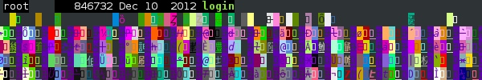
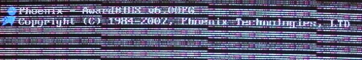
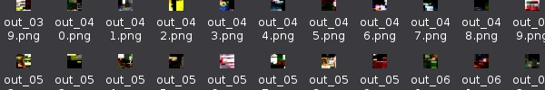

👹 ARTSTUFF.WTF
Hello, It's my last weekend in Los Angeles. I'm moving to New York where I'll be an assistant professor at Purchase. This is the last Artstuff newsletter. Next week the site will pivot to hosting a list of spaces for DIY WTF Artstuff in LA, as well as the archive of past entries. Thanks for reading. Warmly, Lee

FRY 7/13
Additional Content
Electric Lodge
8pm - 10:30pm
FREE
VIABLE OPTION presents ADDITIONAL CONTENT is an exploration in juxtaposition. Three experimental films will trade off with three experimental music sets for a disorienting thrill-ride through the psyches of six boundary-pushing artists. The event will eschew the oft-used effect of layering film and music simultaneously, instead rapidly alternating between self-contained film and music sets for an 80-minute smorgasbord. In order to fully absorb the magic, audiences will be prompted to rotate their chairs 90 degrees between acts, literally swiveling between film and music for a one-of-a-kind sensory experience.
LINK
WAYWARD EMULSIONS: FILMS BY TINA TAKEMOTO
Echo Park Film Center
8pm
$5
Fleeting cinematic impressions of wayward women and star-crossed swordsmen are captured in the oblique wanderings of emulsion. Takemoto’s new works explore queer Asian American history and identity through found imagery and an array of handmade techniques including painting, bleaching, and lifting emulsion from stray reels of 35mm films. Takemoto is currently an artist-in-residence for +Lab hosted by Visual Communications and the Little Tokyo Service Center. FILMMAKER IN ATTENDANCE.
LINK
Perpetual Dawn - 3 Years!
Vertexx
10pm - 4am
$10
We can't believe it's been three years already! From our humble beginnings at the Handbag Factory to the madness that was Bamboo Lane to all the warehouses around town. You've been with us all along. Come celebrate with us: three years of LA-focussed underground electronic sounds and visuals. JS Aurelias, Ahnnu, Zoraya b2b Aura T-09, Kid606, Eric Parren
LINK

SAT 7/14
Rainbow of Desire: Theater of the Oppressed Workshop
The Hammer Museum
2pm - 4pm
FREE
Rainbow of Desire, part of Brazilian director and activist Augusto Boal’s liberatory political theater methodology, is a range of exercises, games, and techniques to identify, analyze, and respond to internalized oppression. Led by Jade Gordon.
LINK
Processing Community Day @ Los Angeles Planning Meet-Up
Tin Flats
3pm - 5pm
FREE
Are you an artist, coder, educator, activist, or someone who's interested in Processing? Do you live in or near Los Angeles? Please join us for an afternoon of brainstorming with friendly people. This meet-up is an opportunity for organizers and the LA creative community to share plans and ideas for PCD @ Los Angeles, which will take place at UCLA next year. There will be a short presentation around 3:30 pm by Xin Xin, the lead organizer for Processing Community Day, followed by casual conversation over refreshments. This event is free and we welcome people of all age, gender and race. PCD @ Los Angeles is an inclusive event that will bring together about two hundred people of all ages to celebrate and explore art, code, and activism. The day-long event features four themed-tracks — Accessibility, Disability, and Care, Radical Pedagogy, Under the Silicon, the Beach!, and Epic Play!. Each themed track contains lightning talks and sessions presented by conference guests we invite through an open call.
LINK

SUN 7/15
Go To The Beach
ALIAS closing reception
Human Resources
3pm - 6pm
FREE
Alias is an exhibition of new video work by Los Angeles-based artist Sarah Rara. Alias focuses on a characteristic distortion of sampled images—Aliasing—where one grid fails to cleanly capture another, and separate entities become indistinguishable. One form ingesting another, a parasite larger than its host: Alias is a story about solar energy, ruined by observation.
LINK
Subcutaneous Metamorphoses
1922 E 7th Pl, roof
7:30pm - 10pm
FREE
A series of Performances by: Margarethe Drexel, Linda Franke, Brian Getnick, Catherine Scoti Scott, Andrés Felipe Uribe; Please come and share space & time with us.
LINK

ABOUT
ARTSTUFF.WTF is a minimal website listing page for selected mostly DIY art (and etc) events going on around Los Angeles. It is a personal list of 5 - 10 events sent out to friends weekly, and made available online here for bookmarking and quick reference. There is an archive of past listings. Sign up to receive weekly emails. Made by Lee Tusman.